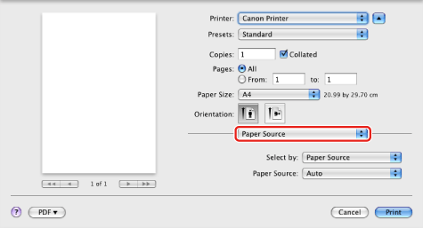
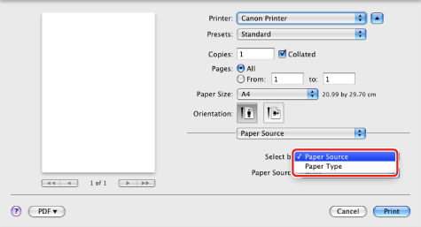
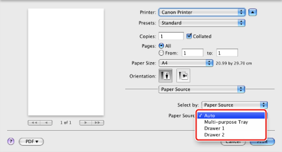

You can select a specific paper source for printing. Normally, the optimum paper source is automatically selected when printing.
1.
From the [File] menu of the application software, select [Print].
The [Print] dialog box is displayed.
2.

The [Paper Source] preferences pane is displayed.
3.
Select [Paper Source] or [Paper Type] from [Select by].

4.
Select the paper source location from [Paper Source] or the type of paper from [Paper Type].

5.
Click [Print] in the [Print] dialog box.